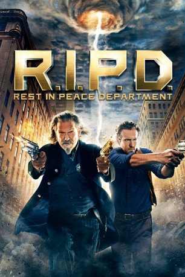

#1045 R.I.P.D.
 gesehen am 16.08.2015
gesehen am 16.08.2015
 
 IMDB-Wertung: 5.6 / 10
IMDB-Wertung: 5.6 / 10  Metascore: 25
Metascore: 25 
Als der Polizist Nick Walker bei einem Einsatz tödlich verwundet wird, muss er feststellen, dass der Tod noch längst nicht die ewige Ruhe mit sich bringt, die man erwarten könnte. Er kehrt als Mitglied des Rest-In-Peace-Departments, kurz: R.I.P.D., in die Welt zurück. Ihm zur Seite steht der ehemalige Revolverheld Roy Pulsipher, der schon seit Jahrhunderten im Auftrag des Departments für Ordnung sorgt. Der erfahrene Cop steht zwar kurz vor der Pensionierung, aber ein letztes Mal will er noch seinem legendären Ruf gerecht werden. Gemeinsam macht sich das untote Duo auf, um die Straßen von allerlei dunkler Kreaturen zu säubern und den Killer zu finden, der auch für Nicks eigenen Tod verantwortlich ist.
Jahr: 2013
Dauer: 96 Minuten
FSK: 12
Land: USA Studio: Universal PicturesTonspuren: DTS - ,
Untertitel: Deutsch,
Auflösung: 1080p (1920x816) Größe: 4843 MB
Genre: Action, Sci-Fi, Komödie, Abenteuer, Fantasy
Regisseur: Robert Schwentke
Drehbuch: Phil Hay, Matt Manfredi, David Dobkin, Phil Hay, Matt Manfredi
Soundtrack: Christophe Beck
Darsteller:
 Jeff Bridges als Roy
Jeff Bridges als Roy Ryan Reynolds als Nick
Ryan Reynolds als Nick Kevin Bacon als Hayes
Kevin Bacon als Hayes Mary-Louise Parker als Proctor
Mary-Louise Parker als Proctor Stephanie Szostak als Julia
Stephanie Szostak als Julia James Hong als Nick's Avatar
James Hong als Nick's Avatar- Marisa Miller als Roy's Avatar
 Robert Knepper als Stanley Nawicki
Robert Knepper als Stanley Nawicki Mike O'Malley als Elliot
Mike O'Malley als Elliot Devin Ratray als Pulaski
Devin Ratray als Pulaski Larry Joe Campbell als Officer Murphy
Larry Joe Campbell als Officer Murphy- Michael Coons als Detective in Locker Room
- Michael Tow als R.I.P.D. Evidence Clerk
- Piper Mackenzie Harris als Nick's New Avatar
 Duncan B. Putney als Executive
Duncan B. Putney als Executive Bill Mootos als Executive
Bill Mootos als Executive- Kortney Adams als Office Girl
- David J. Curtis als Multi-Armed Deado
- Kachina Dechert als Goth Chick Deado
- Cheryl McMahon als Driving Deado
 Matt McColm als Male Cop
Matt McColm als Male Cop- Catherine Kresge als TV Reporter
 John Burke als Newscaster in Helicopter
John Burke als Newscaster in Helicopter Joe Stapleton als R.I.P.D. '70s Cop
Joe Stapleton als R.I.P.D. '70s Cop Tobias Segal als Clement Smokewagon Perkins
Tobias Segal als Clement Smokewagon Perkins Toby Huss als Various Deado
Toby Huss als Various Deado Mike Judge als Various Deado
Mike Judge als Various Deado Charlie Alejandro als Female Boston Police Officer , uncredited
Charlie Alejandro als Female Boston Police Officer , uncredited- Mel Alejandro als Boston Police Officer - Flag Bearer , uncredited
 Stephanie Atkinson als Police Officer , uncredited
Stephanie Atkinson als Police Officer , uncredited David Boston als Boston Deputy Police Superintendent , uncredited
David Boston als Boston Deputy Police Superintendent , uncredited- Seth Chitwood als Business Person , uncredited
 Danny Connelly als R.I.P.D Boston Police Officer , uncredited
Danny Connelly als R.I.P.D Boston Police Officer , uncredited- Stevie Costa als Police officer , uncredited
 Alexandra Creteau als Red Sox Fan , uncredited
Alexandra Creteau als Red Sox Fan , uncredited Sal DiMino als Businessman , uncredited
Sal DiMino als Businessman , uncredited Bob Dio als Frightened Driver , uncredited
Bob Dio als Frightened Driver , uncredited Aaron Dorsey als Red Sox Fan , uncredited
Aaron Dorsey als Red Sox Fan , uncredited Kimberly Evan als 70s Secretary , uncredited
Kimberly Evan als 70s Secretary , uncredited- Mugisha Feruzi als Business Man , uncredited
 Steve Flynn als Julia's Dad , uncredited
Steve Flynn als Julia's Dad , uncredited Jim Ford als Cop #7 , uncredited
Jim Ford als Cop #7 , uncredited John Franchi als Pedestrian , uncredited
John Franchi als Pedestrian , uncredited- Chris Fries als (uncredited
 Suzanne Gillies als Police Officer , uncredited
Suzanne Gillies als Police Officer , uncredited London Hall als Business woman,precision driver , uncredited
London Hall als Business woman,precision driver , uncredited Rosemary Howard als Pedestrian Near Zombie Mob , uncredited
Rosemary Howard als Pedestrian Near Zombie Mob , uncredited Frankie Imbergamo als Police Officer , uncredited
Frankie Imbergamo als Police Officer , uncredited- Stacey Forbes Iwanicki als Woman Walking with Stuntman Washington Street Ri , uncredited
- J Parker Kent als Bullpen Ghost Cop , uncredited
Datei: X:\2013(N-Z)\R.I.P.D. (2013, FSK12, 1920x816).mkv seit 15.05.2015
Festplatte: HD 2013(I-Z)-2014(A-Z)
 Es gibt insgesamt 133 Filme in der Gruppe '2013(N-Z)'
Es gibt insgesamt 133 Filme in der Gruppe '2013(N-Z)'